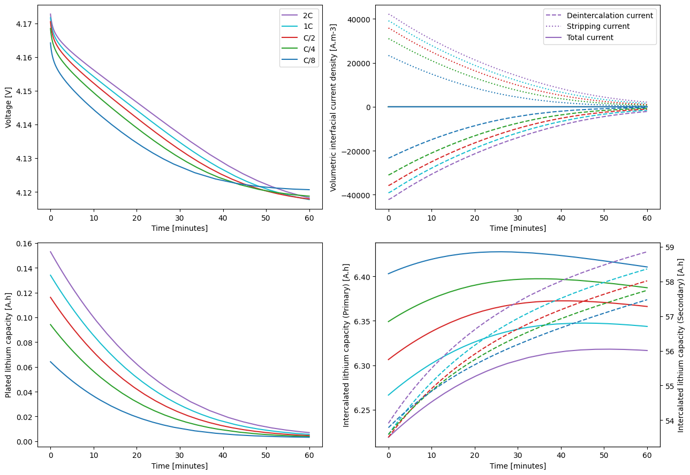
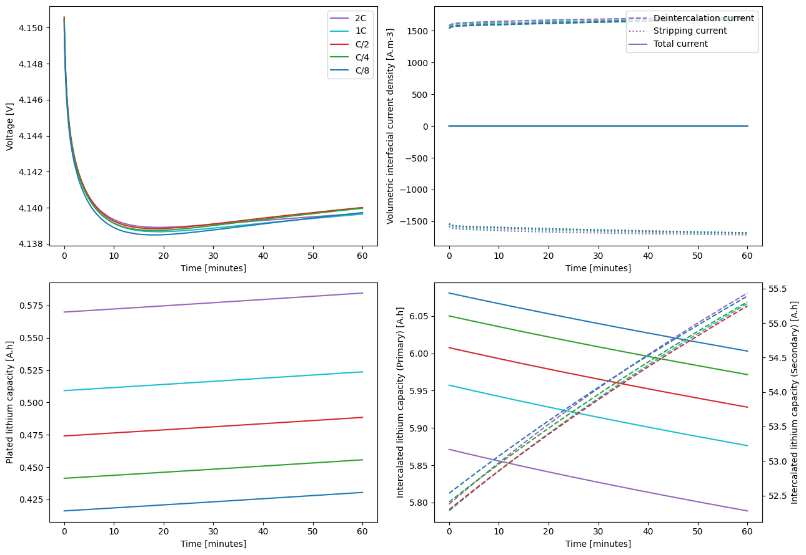
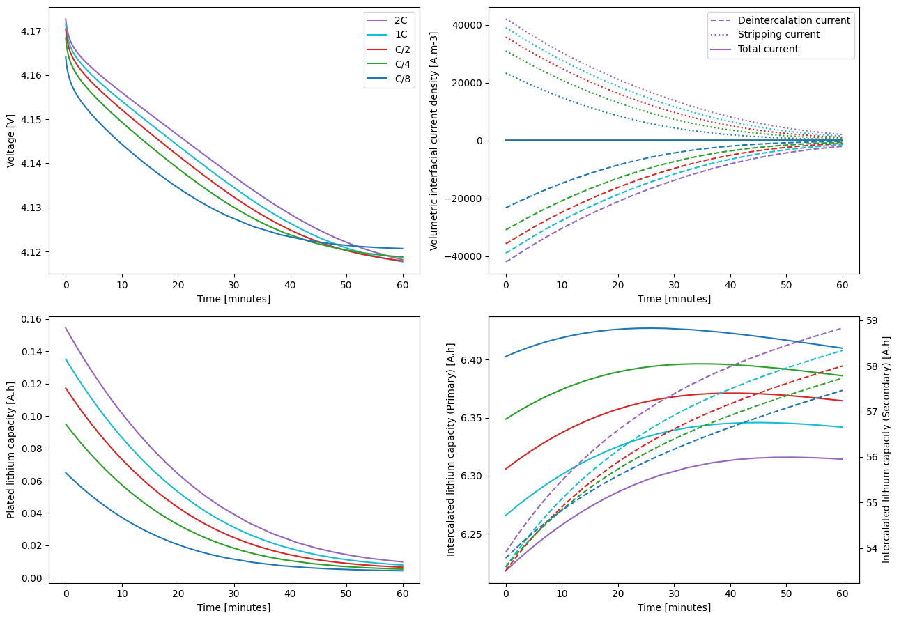

Tip
An interactive online version of this notebook is available, which can be
accessed via

Alternatively, you may download this notebook and run it offline.
Modelling lithium plating on composite electrodes in PyBaMM#
This notebook shows how PyBaMM [8] can be used to model both reversible and irreversible lithium plating on composite electrodes.
[1]:
%pip install "pybamm[plot,cite]" -q # install PyBaMM if it is not installed
import numpy as np
import pybamm
Note: you may need to restart the kernel to use updated packages.
The Doyle-Fuller-Newman model [3] is upgraded with three different lithium plating models. Model 1 contains the reversible lithium plating model of O’Kane et al. [5]. Model 2 contains the same model but with the lithium stripping capability removed, making the plating irreversible. Model 3 contains the updated partially reversible plating of O’Kane et al. [6]. The parameters are taken from Chen et al.』s investigation [2] of an LG M50 cell.
[2]:
# Defining the composite model
model = pybamm.lithium_ion.DFN(
{
"particle phases": ("2", "1"),
"open-circuit potential": (("single", "current sigmoid"), "single"),
}
)
# Invoking the Chen2020 parameter set
parameter_values = pybamm.ParameterValues("Chen2020_composite")
[3]:
# Definig temperature/concentration dependent parameters for plating
def graphite_plating_exchange_current_density_OKane2020(c_e, c_Li, T):
"""
Exchange-current density for Li plating reaction [A.m-2].
References
----------
.. [1] O’Kane, Simon EJ, Ian D. Campbell, Mohamed WJ Marzook, Gregory J. Offer, and
Monica Marinescu. "Physical origin of the differential voltage minimum associated
with lithium plating in Li-ion batteries." Journal of The Electrochemical Society
167, no. 9 (2020): 090540.
Parameters
----------
c_e : :class:`pybamm.Symbol`
Electrolyte concentration [mol.m-3]
c_Li : :class:`pybamm.Symbol`
Plated lithium concentration [mol.m-3]
T : :class:`pybamm.Symbol`
Temperature [K]
Returns
-------
:class:`pybamm.Symbol`
Exchange-current density [A.m-2]
"""
k_plating = pybamm.Parameter(
"Primary: Lithium plating kinetic rate constant [m.s-1]"
)
return pybamm.constants.F * k_plating * c_e
def graphite_stripping_exchange_current_density_OKane2020(c_e, c_Li, T):
"""
Exchange-current density for Li stripping reaction [A.m-2].
References
----------
.. [1] O’Kane, Simon EJ, Ian D. Campbell, Mohamed WJ Marzook, Gregory J. Offer, and
Monica Marinescu. "Physical origin of the differential voltage minimum associated
with lithium plating in Li-ion batteries." Journal of The Electrochemical Society
167, no. 9 (2020): 090540.
Parameters
----------
c_e : :class:`pybamm.Symbol`
Electrolyte concentration [mol.m-3]
c_Li : :class:`pybamm.Symbol`
Plated lithium concentration [mol.m-3]
T : :class:`pybamm.Symbol`
Temperature [K]
Returns
-------
:class:`pybamm.Symbol`
Exchange-current density [A.m-2]
"""
k_plating = pybamm.Parameter(
"Primary: Lithium plating kinetic rate constant [m.s-1]"
)
return pybamm.constants.F * k_plating * c_Li
def graphite_SEI_limited_dead_lithium_OKane2022(L_sei):
"""
Decay rate for dead lithium formation [s-1].
References
----------
.. [1] Simon E. J. O'Kane, Weilong Ai, Ganesh Madabattula, Diega Alonso-Alvarez,
Robert Timms, Valentin Sulzer, Jaqueline Sophie Edge, Billy Wu, Gregory J. Offer
and Monica Marinescu. "Lithium-ion battery degradation: how to model it."
Physical Chemistry: Chemical Physics 24, no. 13 (2022): 7909-7922.
Parameters
----------
L_sei : :class:`pybamm.Symbol`
Total SEI thickness [m]
Returns
-------
:class:`pybamm.Symbol`
Dead lithium decay rate [s-1]
"""
gamma_0 = pybamm.Parameter("Primary: Dead lithium decay constant [s-1]")
L_inner_0 = pybamm.Parameter("Primary: Initial inner SEI thickness [m]")
L_outer_0 = pybamm.Parameter("Primary: Initial outer SEI thickness [m]")
L_sei_0 = L_inner_0 + L_outer_0
gamma = gamma_0 * L_sei_0 / L_sei
return gamma
def silicon_plating_exchange_current_density_OKane2020(c_e, c_Li, T):
"""
Exchange-current density for Li plating reaction [A.m-2].
References
----------
.. [1] O’Kane, Simon EJ, Ian D. Campbell, Mohamed WJ Marzook, Gregory J. Offer, and
Monica Marinescu. "Physical origin of the differential voltage minimum associated
with lithium plating in Li-ion batteries." Journal of The Electrochemical Society
167, no. 9 (2020): 090540.
Parameters
----------
c_e : :class:`pybamm.Symbol`
Electrolyte concentration [mol.m-3]
c_Li : :class:`pybamm.Symbol`
Plated lithium concentration [mol.m-3]
T : :class:`pybamm.Symbol`
Temperature [K]
Returns
-------
:class:`pybamm.Symbol`
Exchange-current density [A.m-2]
"""
k_plating = pybamm.Parameter(
"Secondary: Lithium plating kinetic rate constant [m.s-1]"
)
return pybamm.constants.F * k_plating * c_e
def silicon_stripping_exchange_current_density_OKane2020(c_e, c_Li, T):
"""
Exchange-current density for Li stripping reaction [A.m-2].
References
----------
.. [1] O’Kane, Simon EJ, Ian D. Campbell, Mohamed WJ Marzook, Gregory J. Offer, and
Monica Marinescu. "Physical origin of the differential voltage minimum associated
with lithium plating in Li-ion batteries." Journal of The Electrochemical Society
167, no. 9 (2020): 090540.
Parameters
----------
c_e : :class:`pybamm.Symbol`
Electrolyte concentration [mol.m-3]
c_Li : :class:`pybamm.Symbol`
Plated lithium concentration [mol.m-3]
T : :class:`pybamm.Symbol`
Temperature [K]
Returns
-------
:class:`pybamm.Symbol`
Exchange-current density [A.m-2]
"""
k_plating = pybamm.Parameter(
"Secondary: Lithium plating kinetic rate constant [m.s-1]"
)
return pybamm.constants.F * k_plating * c_Li
def silicon_SEI_limited_dead_lithium_OKane2022(L_sei):
"""
Decay rate for dead lithium formation [s-1].
References
----------
.. [1] Simon E. J. O'Kane, Weilong Ai, Ganesh Madabattula, Diega Alonso-Alvarez,
Robert Timms, Valentin Sulzer, Jaqueline Sophie Edge, Billy Wu, Gregory J. Offer
and Monica Marinescu. "Lithium-ion battery degradation: how to model it."
Physical Chemistry: Chemical Physics 24, no. 13 (2022): 7909-7922.
Parameters
----------
L_sei : :class:`pybamm.Symbol`
Total SEI thickness [m]
Returns
-------
:class:`pybamm.Symbol`
Dead lithium decay rate [s-1]
"""
gamma_0 = pybamm.Parameter("Secondary: Dead lithium decay constant [s-1]")
L_inner_0 = pybamm.Parameter("Secondary: Initial inner SEI thickness [m]")
L_outer_0 = pybamm.Parameter("Secondary: Initial outer SEI thickness [m]")
L_sei_0 = L_inner_0 + L_outer_0
gamma = gamma_0 * L_sei_0 / L_sei
return gamma
def graphite_LGM50_electrolyte_exchange_current_density_Chen2020(
c_e, c_s_surf, c_s_max, T
):
"""
Exchange-current density for Butler-Volmer reactions between graphite and LiPF6 in
EC:DMC.
References
----------
.. [1] Chang-Hui Chen, Ferran Brosa Planella, Kieran O’Regan, Dominika Gastol, W.
Dhammika Widanage, and Emma Kendrick. "Development of Experimental Techniques for
Parameterization of Multi-scale Lithium-ion Battery Models." Journal of the
Electrochemical Society 167 (2020): 080534.
Parameters
----------
c_e : :class:`pybamm.Symbol`
Electrolyte concentration [mol.m-3]
c_s_surf : :class:`pybamm.Symbol`
Particle concentration [mol.m-3]
c_s_max : :class:`pybamm.Symbol`
Maximum particle concentration [mol.m-3]
T : :class:`pybamm.Symbol`
Temperature [K]
Returns
-------
:class:`pybamm.Symbol`
Exchange-current density [A.m-2]
"""
m_ref = 6.48e-7 # (A/m2)(m3/mol)**1.5 - includes ref concentrations
E_r = 35000
arrhenius = np.exp(E_r / pybamm.constants.R * (1 / 298.15 - 1 / T))
return m_ref * arrhenius * c_e**0.5 * c_s_surf**0.5 * (c_s_max - c_s_surf) ** 0.5
[4]:
# Adding plating parameters to the parameter set
# plating_parameters =
parameter_values.update(
{
# Plating parameters referred from OKane2022
"Lithium metal partial molar volume [m3.mol-1]": 1.3e-05,
"Primary: Lithium plating kinetic rate constant [m.s-1]": 1e-09,
"Primary: Exchange-current density for plating [A.m-2]"
"": graphite_plating_exchange_current_density_OKane2020,
"Primary: Exchange-current density for stripping [A.m-2]"
"": graphite_stripping_exchange_current_density_OKane2020,
"Primary: Initial plated lithium concentration [mol.m-3]": 0.0,
"Primary: Typical plated lithium concentration [mol.m-3]": 1000.0,
"Primary: Lithium plating transfer coefficient": 0.65,
"Primary: Dead lithium decay constant [s-1]": 1e-06,
"Primary: Dead lithium decay rate [s-1]"
"": graphite_SEI_limited_dead_lithium_OKane2022,
"Secondary: Lithium plating kinetic rate constant [m.s-1]": 1e-09,
"Secondary: Exchange-current density for plating [A.m-2]"
"": silicon_plating_exchange_current_density_OKane2020,
"Secondary: Exchange-current density for stripping [A.m-2]"
"": silicon_stripping_exchange_current_density_OKane2020,
"Secondary: Initial plated lithium concentration [mol.m-3]": 0.0,
"Secondary: Typical plated lithium concentration [mol.m-3]": 1000.0,
"Secondary: Lithium plating transfer coefficient": 0.65,
"Secondary: Dead lithium decay constant [s-1]": 1e-06,
"Secondary: Dead lithium decay rate [s-1]"
"": silicon_SEI_limited_dead_lithium_OKane2022,
}
)
[5]:
# choose models
composite_options = {
"particle phases": ("2", "1"),
"open-circuit potential": (("single", "current sigmoid"), "single"),
}
plating_options = ["reversible", "irreversible", "partially reversible"]
models = {}
for option in plating_options:
# Merge the plating option with the default options
options = composite_options.copy()
options["lithium plating"] = option
# Initialize the DFN model with these options
models[option] = pybamm.lithium_ion.DFN(options=options, name=option)
# pick parameters
parameter_values.update({"Ambient temperature [K]": 268.15})
parameter_values.update({"Upper voltage cut-off [V]": 4.21})
parameter_values.update(
{"Lithium plating transfer coefficient": 0.5},
)
parameter_values.update(
{"Dead lithium decay constant [s-1]": 1e-4},
)
parameter_values.update(
{"Primary: Initial inner SEI thickness [m]": 5e-09},
)
parameter_values.update(
{"Primary: Initial outer SEI thickness [m]": 5e-09},
)
parameter_values.update(
{"Secondary: Initial inner SEI thickness [m]": 5e-09},
)
parameter_values.update(
{"Secondary: Initial outer SEI thickness [m]": 5e-09},
)
# parameter_values.update({"Lithium plating kinetic rate constant [m.s-1]": 1E-9})
A series of simple fast charging experiments based on those of Ren et al. [7] is defined here. We first initialise the model at 0% SoC by performing a C/20 discharge (see more details on how to initialise a model from a simulation in this notebook).
[6]:
# specify experiments
pybamm.citations.register("Ren2018")
s = pybamm.step.string
experiment_discharge = pybamm.Experiment(
[
(
"Discharge at C/20 until 2.5 V",
"Rest for 1 hour",
)
]
)
sims_discharge = []
for model in models.values():
sim_discharge = pybamm.Simulation(
model, parameter_values=parameter_values, experiment=experiment_discharge
)
sol_discharge = sim_discharge.solve(calc_esoh=False)
model.set_initial_conditions_from(sol_discharge, inplace=True)
sims_discharge.append(sim_discharge)
And we can now define the different experiments to charge at different C-rates.
[7]:
C_rates = ["2C", "1C", "C/2", "C/4", "C/8"]
experiments = {}
for C_rate in C_rates:
experiments[C_rate] = pybamm.Experiment(
[
(
f"Charge at {C_rate} until 4.2 V",
"Hold at 4.2 V until C/20",
"Rest for 1 hour",
)
]
)
Solve the reversible plating model first.
[8]:
def define_and_solve_sims(model, experiments, parameter_values):
sims = {}
for C_rate, experiment in experiments.items():
sim = pybamm.Simulation(
model, experiment=experiment, parameter_values=parameter_values
)
sim.solve(calc_esoh=False)
sims[C_rate] = sim
return sims
sims_reversible = define_and_solve_sims(
models["reversible"], experiments, parameter_values
)
[9]:
colors = ["tab:purple", "tab:cyan", "tab:red", "tab:green", "tab:blue"]
linestyles = ["dashed", "dotted", "solid"]
param = models["reversible"].param
A = parameter_values.evaluate(param.L_y * param.L_z)
F = parameter_values.evaluate(param.F)
L_n = parameter_values.evaluate(param.n.L)
currents = [
"X-averaged negative electrode volumetric interfacial current density [A.m-3]",
"X-averaged negative electrode lithium plating volumetric interfacial current density [A.m-3]",
"Sum of x-averaged negative electrode volumetric interfacial current densities [A.m-3]",
]
def plot(sims):
import matplotlib.pyplot as plt
fig, axs = plt.subplots(2, 2, figsize=(13, 9))
ax2 = axs[1, 1].twinx() # Create a secondary y-axis
for (C_rate, sim), color in zip(sims.items(), colors, strict=False):
# Isolate final equilibration phase
sol = sim.solution.cycles[0].steps[2]
# Voltage vs time
t = sol["Time [min]"].entries
t = t - t[0]
V = sol["Voltage [V]"].entries
axs[0, 0].plot(t, V, color=color, linestyle="solid", label=C_rate)
# Currents
for current, ls in zip(currents, linestyles, strict=False):
j = sol[current].entries
axs[0, 1].plot(t, j, color=color, linestyle=ls)
# Plated lithium capacity
Q_Li = sol["Loss of capacity to negative lithium plating [A.h]"].entries
axs[1, 0].plot(t, Q_Li, color=color, linestyle="solid")
# Capacity vs time
Q_prim = (
sol[
"Negative electrode primary volume-averaged concentration [mol.m-3]"
].entries
* F
* A
* L_n
/ 3600
)
Q_sec = (
sol[
"Negative electrode secondary volume-averaged concentration [mol.m-3]"
].entries
* F
* A
* L_n
/ 3600
)
axs[1, 1].plot(t, Q_prim, color=color, linestyle="solid")
ax2.plot(t, Q_sec, color=color, linestyle="dashed")
axs[0, 0].legend()
axs[0, 0].set_ylabel("Voltage [V]")
axs[0, 1].set_ylabel("Volumetric interfacial current density [A.m-3]")
axs[0, 1].legend(("Deintercalation current", "Stripping current", "Total current"))
axs[1, 0].set_ylabel("Plated lithium capacity [A.h]")
axs[1, 1].set_ylabel("Intercalated lithium capacity (Primary) [A.h]")
ax2.set_ylabel("Intercalated lithium capacity (Secondary) [A.h]")
for ax in axs.flat:
ax.set_xlabel("Time [minutes]")
fig.tight_layout()
return fig, axs
plot(sims_reversible);

The results show both similarities and differences with those of Ren et al. [7]. Notably, unlike Ren et al., this model uses equations [5] that result in a small but finite amount of plated lithium being present in the steady state.
Now solve the irreversible plating model and see how it compares.
[10]:
sims_irreversible = define_and_solve_sims(
models["irreversible"], experiments, parameter_values
)
[11]:
plot(sims_irreversible);

Unlike in the reversible case, there is no steady state and the capacity degrades quickly. The lithium inventory decreases by around 40 mAh in just an hour, which is unrealistic. The low temperature fast charge simulations are run one more time, with the partially reversible plating model.
[12]:
sims_partially_reversible = define_and_solve_sims(
models["partially reversible"], experiments, parameter_values
)
[13]:
plot(sims_partially_reversible);

The partially reversible plating model has features of both the reversible and irreversible models, which is reflected in the results. The plated lithium capacity decreases with time as lithium is reversibly stripped, but the final plated lithium capacity now depends on charge rate, indicating that some lithium was irreversibly plated during charge.
References#
[14]:
pybamm.print_citations()
[1] Weilong Ai, Niall Kirkaldy, Yang Jiang, Gregory Offer, Huizhi Wang, and Billy Wu. A composite electrode model for lithium-ion batteries with silicon/graphite negative electrodes. Journal of Power Sources, 527:231142, 2022. URL: https://www.sciencedirect.com/science/article/pii/S0378775322001604, doi:https://doi.org/10.1016/j.jpowsour.2022.231142.
[2] Joel A. E. Andersson, Joris Gillis, Greg Horn, James B. Rawlings, and Moritz Diehl. CasADi – A software framework for nonlinear optimization and optimal control. Mathematical Programming Computation, 11(1):1–36, 2019. doi:10.1007/s12532-018-0139-4.
[3] Von DAG Bruggeman. Berechnung verschiedener physikalischer konstanten von heterogenen substanzen. i. dielektrizitätskonstanten und leitfähigkeiten der mischkörper aus isotropen substanzen. Annalen der physik, 416(7):636–664, 1935.
[4] Chang-Hui Chen, Ferran Brosa Planella, Kieran O'Regan, Dominika Gastol, W. Dhammika Widanage, and Emma Kendrick. Development of Experimental Techniques for Parameterization of Multi-scale Lithium-ion Battery Models. Journal of The Electrochemical Society, 167(8):080534, 2020. doi:10.1149/1945-7111/ab9050.
[5] Marc Doyle, Thomas F. Fuller, and John Newman. Modeling of galvanostatic charge and discharge of the lithium/polymer/insertion cell. Journal of the Electrochemical society, 140(6):1526–1533, 1993. doi:10.1149/1.2221597.
[6] Charles R. Harris, K. Jarrod Millman, Stéfan J. van der Walt, Ralf Gommers, Pauli Virtanen, David Cournapeau, Eric Wieser, Julian Taylor, Sebastian Berg, Nathaniel J. Smith, and others. Array programming with NumPy. Nature, 585(7825):357–362, 2020. doi:10.1038/s41586-020-2649-2.
[7] Alan C. Hindmarsh. The PVODE and IDA algorithms. Technical Report, Lawrence Livermore National Lab., CA (US), 2000. doi:10.2172/802599.
[8] Alan C. Hindmarsh, Peter N. Brown, Keith E. Grant, Steven L. Lee, Radu Serban, Dan E. Shumaker, and Carol S. Woodward. SUNDIALS: Suite of nonlinear and differential/algebraic equation solvers. ACM Transactions on Mathematical Software (TOMS), 31(3):363–396, 2005. doi:10.1145/1089014.1089020.
[9] Simon E. J. O'Kane, Ian D. Campbell, Mohamed W. J. Marzook, Gregory J. Offer, and Monica Marinescu. Physical origin of the differential voltage minimum associated with lithium plating in li-ion batteries. Journal of The Electrochemical Society, 167(9):090540, may 2020. URL: https://doi.org/10.1149/1945-7111/ab90ac, doi:10.1149/1945-7111/ab90ac.
[10] Simon E. J. O'Kane, Weilong Ai, Ganesh Madabattula, Diego Alonso-Alvarez, Robert Timms, Valentin Sulzer, Jacqueline Sophie Edge, Billy Wu, Gregory J. Offer, and Monica Marinescu. Lithium-ion battery degradation: how to model it. Phys. Chem. Chem. Phys., 24:7909-7922, 2022. URL: http://dx.doi.org/10.1039/D2CP00417H, doi:10.1039/D2CP00417H.
[11] Dongsheng Ren, Kandler Smith, Dongxu Guo, Xuebing Han, Xuning Feng, Languang Lu, and Minggao Ouyang. Investigation of lithium plating-stripping process in li-ion batteries at low temperature using an electrochemical model. Journal of the Electrochemistry Society, 165:A2167-A2178, 2018. doi:10.1149/2.0661810jes.
[12] Valentin Sulzer, Scott G. Marquis, Robert Timms, Martin Robinson, and S. Jon Chapman. Python Battery Mathematical Modelling (PyBaMM). Journal of Open Research Software, 9(1):14, 2021. doi:10.5334/jors.309.